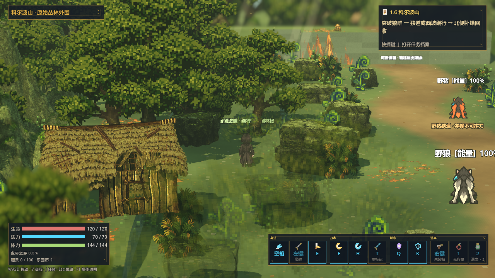
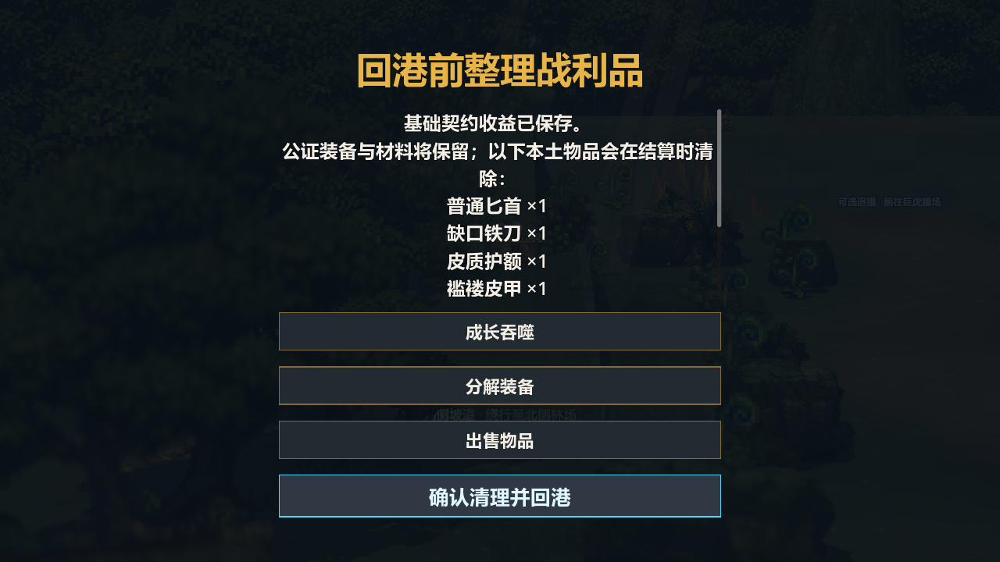
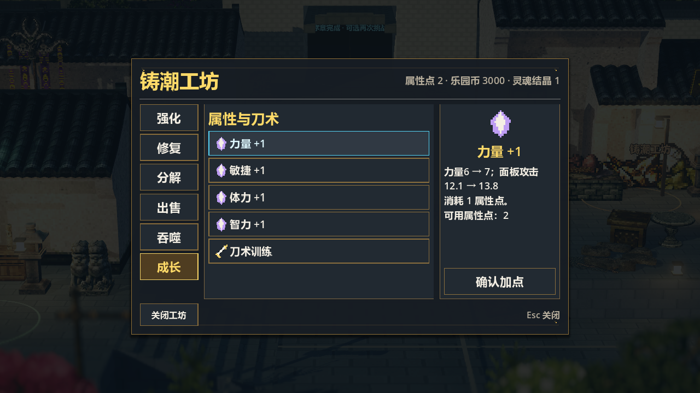
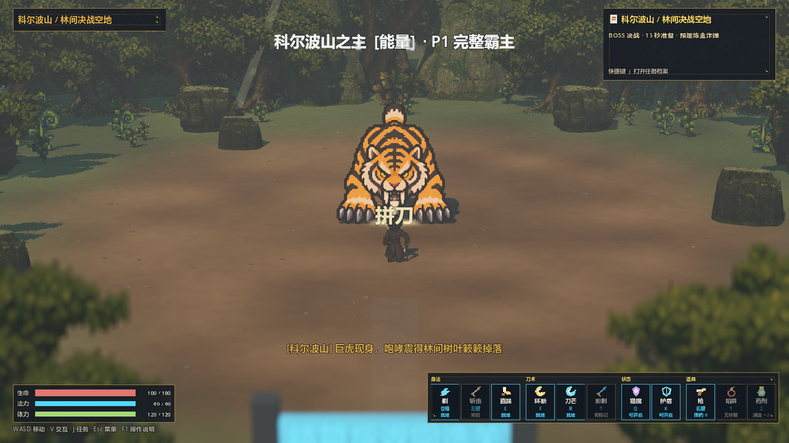

总目录 / HD-2D 动作 RPG
HD-2D 动作 RPG 个人原型
围绕探索、战斗、收益结算与永久成长完成可玩的动作 RPG 序章。作品重点是把规则拆成任务条件、状态、资源与奖励，再落实到关卡、界面和可验证的原型。

个人职责与项目范围
我全程负责玩法与系统设计、数值配置、关卡搭建、功能整合和迭代验证，AI 全程辅助代码实现、资源制作与文档整理。面向执行策划与系统策划，主要展示规则拆解、数据配置、流程衔接和异常分支处理。
当前采用 2D 角色与 3D 场景，已接入五段序章、森林履约、可选巨虎挑战、装备与属性成长、港口整备及检查点重试。后续主线尚未开放；序章完成后，重复挑战由玩家主动选择。
任务与成长如何形成循环
探索与接敌 → 战斗消耗 → 完成履约 → 撤离或追猎 → 整理战利品 → 回港成长。系统设计围绕每一步的进入条件、结果状态和收益归属展开。
| 环节 | 已落地规则 | 设计意图 |
|---|---|---|
| 基础履约 | 回收林场补给，保存 3.2% 世界之源 | 为基础目标提供明确终点 |
| 可选追猎 | 保留剩余生命、法力、补给与耐久进入巨虎挑战 | 让前段消耗影响后续选择 |
| 额外收益 | 真实击杀才发绿箱、虎齿与 15 点永久法力 | 区分履约、撤离和真实击杀 |
| 结算成长 | 整理本土物品，预览属性、强化和刀术效果 | 让物品处置与成长变化可见 |
| 状态保护 | 奖励防重、检查点重试、未提交部分回滚 | 保持任务与收益一致 |


三个设计迭代案例
一 森林风险收益与系统衔接
S 情境 已有序章将技能练习、森林履约与巨虎挑战绑得较紧；猎场自动恢复资源，弱化了前后阶段的消耗关系。
T 任务 在现有五段范围内完成可结束并可回港成长的序章，明确基础目标与额外挑战各自的条件和收益。
A 行动 将技能教学改为可选提示，分别记录履约与真实击杀。履约后保存基础收益，允许撤离或带剩余资源追猎；真实击杀后才发额外奖励。同时加入奖励防重、结算前物品整理和成长预览，使用 AI 辅助实现并核对异常路径。
R 结果 基础履约、可选追猎、物品整理与永久成长已经串联。本轮序章规则检查零失败，覆盖提前撤离、诈死撤离、真实击杀、重复领奖和试玩档隔离。玩家选择比例与体验改善仍待真人测试。
二 关卡通路与推进条件修正
S 情境 森林改为空间遭遇后，实际通路检查发现旧西台地与北出口卡路；地图视觉、碰撞和导航存在不一致。
T 任务 保留已有台地与建筑，使中央路线、西侧坡道及补给后的追猎出口均可实际到达。
A 行动 补充西侧通路，将追猎入口放到北侧可通行地面，保留可调整的入口、出口及刷怪标记。沿导航路径驱动角色做碰撞移动，并检测停滞；不以直接传送代替通路验收。
R 结果 本轮森林通路检查零失败，覆盖两条路线及补给点到追猎入口。该结果证明实际可达，新玩家的路线辨识与迷路情况仍需观察。
三 三段连招与近战动作迭代
S 情境 近战需要兼顾连续输入、接敌距离与防御选择，避免单次攻击转向漂移或穿过障碍。
T 任务 将动作体验目标拆成可配置的时序和衔接规则，使完整连招与转入技能各有取舍。
A 行动 确定斜斩、突刺、重斩三段结构；配置 0.15 秒输入缓冲，前两段命中后开放 0.18 秒取消窗口，第三段保留恢复。普攻在 0.10 至 0.22 秒沿起手方向前移 0.3 米，并经过碰撞检测。AI 辅助代码实现，我负责规则确定与验收。
R 结果 本轮连招与即时动作时序检查零失败；攻击前移参数经源码核对，专项距离与碰撞测量未重跑。最终手感和难度仍需玩家反馈。

验证结果与当前范围
- 历史工程记录：2026-10-04 记录 17 组检查通过；连续渲染巡检 1831.7 秒，约 30.5 分钟、53 轮场景与菜单循环，记录中未发现脚本异常或崩溃。
- 2026-10-13 针对性复核：连招、序章、存档事务、森林通路与即时动作时序五项检查均退出码 0，并输出对应零失败标记。
- 日志边界：部分检查退出时有 ObjectDB 与资源清理告警；存档检查包含主动构造坏档的解析报错与备份回退。不能把断言通过写成“零报错”或“无内存泄漏”。
- 体验边界：陌生玩家理解、20～30 分钟实玩节奏、难度与乐趣、实物手柄及当前正式发行包尚未验收。历史加载尖峰不能作为“稳定 60 FPS”的证据。
八张截图来自已有工程捕获；实机视频尚未录制。本页提供展示材料，不把旧验证包标为当前发行版。
文档与完整材料
作品属于原著题材练习，代码实现与资源制作均包含 AI 辅助。